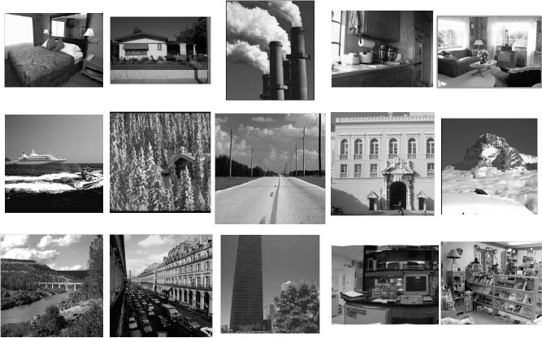

Pairwise Rotation Invariant Co-occurrence Local Binary Pattern
Xianbiao Qi, Rong Xiao, Yu Qiao, Jun Guo, Xiaoou Tang
Beijing University of Posts and Telecommunications, Microsoft Coroperation,
Shenzhen Institutes of Advanced Technology, Chinese Academy of Sciences
Designing simple and effective feature is a fundamental problem in computer vision. Spatial co-occurrence could boost the discriminative power of the features, but many vision applications also suffer from the geometric and photometric variations. Therefore, how to design discirminative and transformation invariant features is crucial to a lot of vision problems. In this paper, we investigate the problem of pairwise transformation invariance, and propose a pairwise rotation invariant co-occurrence local binary pattern (PRI-CoLBP) feature, which well captures the local curvature information between the co-occurrence pair. The proposed feature is discirminative and computationally efficient.
The proposed feature has been widely applied to six applications, including texture classification, material recognition, flower recognition, leaf recognition, food recognition and scene classification. Superior performances are achieved on all six applications.
Disciminative power and transformation invariance are the two most important properties of current features.
Spatial co-occurrence could greatly boost the discriminative power of the features, but its transformation invariant is hard to obtain.
Different with single feature, to achieve transformation invariance for co-occurrence feature, we should promise the following two conditions:
1: The correspondence of described points set should be promised under different image transformations.
2: The descriptor for points set is transformation invariant.
In practise, we densely sample each points of the images.
The proposed feature has the following properties:
1: Rotation Invariant.
2: Computationally Efficient.
3: Extremely Effecitive on describing texture information.
With the provided source code, you could easily run and get our results.
The feature matrices are avialble at This Link.
In our work, we test our feature on three texutre datasets, include Brodatz, CUReT, and KTH-TIPS.

This work was supported by National Natural Science Foundation of China(Grant No.61005004 and 61175011),the 111 project(Grant No.B08004), and the Fundamental Research Funds for the Central Universities(Grant No.2012RC0108).